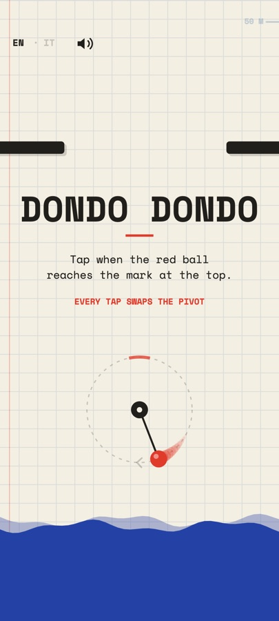
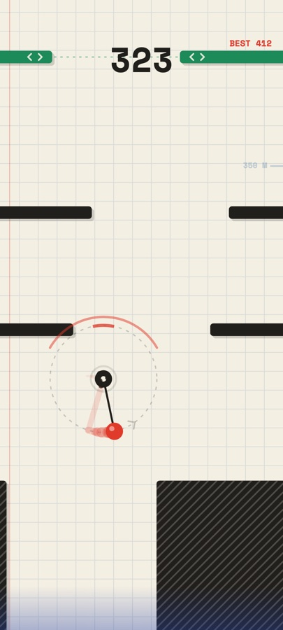
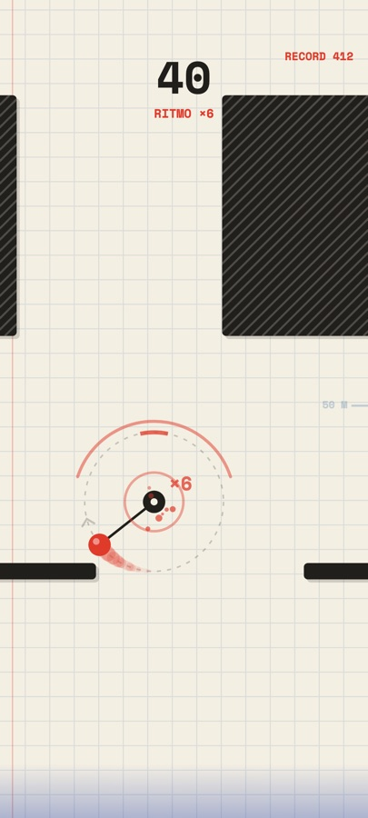
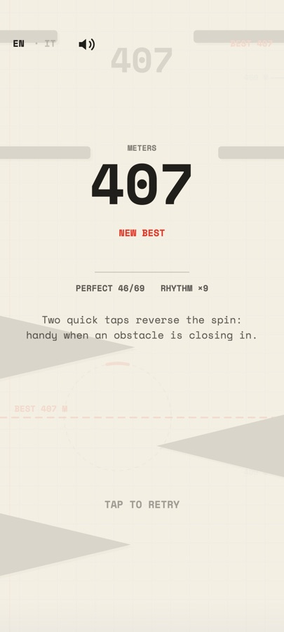

tap here to swap the pivot
How to play
01
Two balls, one string
One stays still, the other swings around it.
02
Tap to swap
The swinging ball becomes the pivot. Tap at the top and you climb straight up.
03
Outrun the tide
Dodge the ink obstacles and keep climbing before the water catches you.
A notebook page full of ink




The color tells you what it does
- Black: stands still
- Green with arrows: moves
- Purple: spins
- Red mark: the tide is rising, hit it!
Why you'll play one more
- One-tap controls you'll learn in seconds
- Runs of 10 to 60 seconds
- The dotted circle shows where you're going: every miss is on you
- Your best height is drawn into the level
- Perfect taps make you spin faster
- Works offline, no account needed
- Light ads: never during a run
- Play in English or Italian